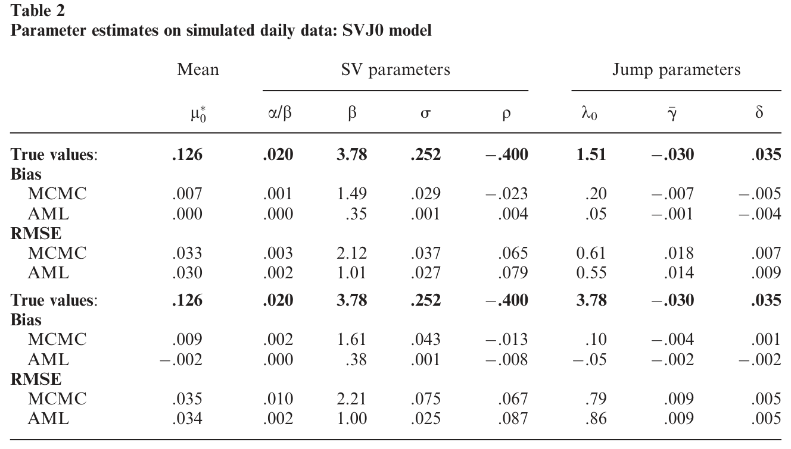
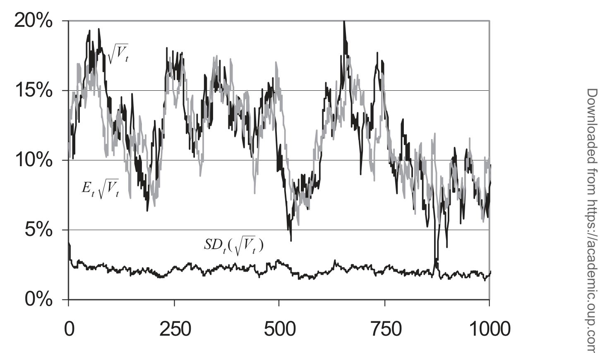
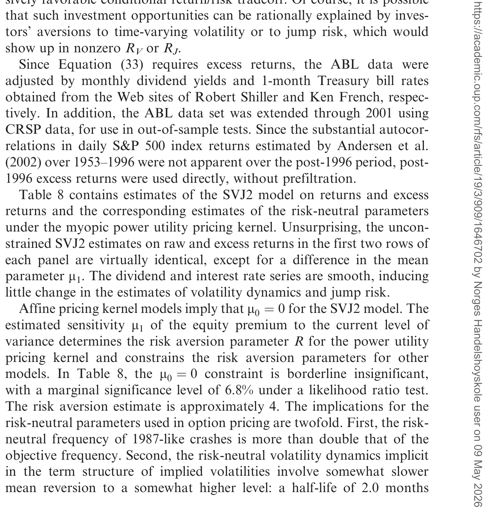
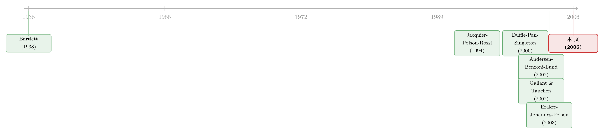

看不见的波动率，换一种「语言」就追到了
本文读的是 Bates (2006, Review of Financial Studies)：当我们想从股票收益里同时估出「看不见的波动率」和「看不见的跳跃风险」时，与其在概率密度里硬算，不如换到特征函数 (characteristic function) 的世界——用一条 Bayes 法则的「傅里叶版」递归更新潜变量的特征函数。这套被作者称为近似极大似然 (approximate maximum likelihood, AML) 的方法，把参数估计和潜变量滤波第一次装进了同一个框架；用到 1953–1996 年的标普 500 日收益上，它读出了比 EMM 更大、更随时间起伏的跳跃风险。
1 一个三十年都没解干净的难题
随机波动率 (stochastic volatility) 这个想法，到 2006 年已经在金融学里活了三十年。可奇怪的是，理论上人人都同意「资产收益的波动是会变的、是随机的」，真要把这个随机过程的参数、以及「此时此刻波动率到底有多高」一并估出来，却出奇地难。
难在哪？Bates 在引言里把它拆成两个互相纠缠的子问题，干净利落：
- 估计问题：怎样从可观测的数据里，识别出状态空间系统 (state space system) 的参数；
- 滤波问题：在参数已知的前提下，怎样从过去的数据里，反推出当前那个看不见的潜变量 (latent variable) 取到了多少。
这两件事听上去像一回事，其实是两层皮。打个最贴近实务的比方：风险管理里的在险价值 (Value at Risk) 关心的就是第二个问题——「今天的波动率到底是多少」；而 GARCH 的流行，本质上不过是给「用过去数据推断当前波动」这件事，提供了一个简单到可以确定性计算的滤波算法。
这里埋着全文的张力：主流方法几乎都在专心解第一个问题。
效率方法矩 (Efficient Method of Moments, EMM)、马尔可夫链蒙特卡洛 (Markov Chain Monte Carlo, MCMC)，这些仿真类的重武器，火力全部对准参数估计。可一旦参数估出来了，你想知道「此刻波动率多高」，还得再额外接上一道滤波程序——Gallant 和 Tauchen (1998, 2002) 要靠所谓「再投影 (reprojection)」从大量仿真里学出一条「由过去收益推断波动」的经验规则；Johannes、Polson 和 Stroud (2002) 则给 Eraker、Johannes 和 Polson (2003) 的 MCMC 估计，再补一个粒子滤波。
参数估计和波动率滤波，被人为地切成了两段。Bates 想问的是：能不能让它们从头到尾就是一件事？
2 为什么是「特征函数」，而不是「密度」
接着，一个自然的问题是：既然要做滤波，卡尔曼滤波 (Kalman filtration) 不就是现成的吗？
是的，但卡尔曼滤波吃的是高斯。在高斯状态空间模型里，潜变量的条件分布被一对矩——条件均值 \(\hat{x}_{t|t}\) 和条件方差 \(P_{t|t}\)——完全刻画，对应的矩母函数 (moment generating function) 简单到就是 \(G_{t|t}(c)=\exp[\hat{x}_{t|t}c+\tfrac12 P_{t|t}c^2]\)。Hamilton (1994, 第 13 章) 把这套递归写得一清二楚。
可金融数据偏偏不肯高斯。收益有肥尾、有跳跃，波动率非负且均值回归——这些恰恰是高斯装不下的东西。于是问题变成：怎样把卡尔曼滤波那套「递归更新两个矩」的优雅，推广到没有多元正态这种便利的更一般的过程上去？
这里就是全文真正关键的一步。Bates 的答案不是去硬碰概率密度，而是搬到它的傅里叶背面——特征函数。理由有二，都很实在：
- 第一，滤波问题天生跟特征函数更亲。潜变量的条件矩，和特征函数的关系，比和密度的关系直接得多（毕竟矩就是特征函数在原点的各阶导数）。
- 第二，也是更深的一条：能写出解析转移密度的状态空间系统少得可怜，能写出解析条件特征函数的却多得多。仿射 (affine) 类过程的全部魅力，正在于此——它的密度、分布、期权价格往往没有闭式解，却几乎总能从特征函数出发，靠傅里叶反演 (Fourier inversion) 数值地算出来。
换句话说，密度这门「语言」太窄，很多有意思的过程根本没法用它流利地说话；特征函数这门语言宽得多。Bates 做的，就是把整套滤波递归，从密度的语言整体翻译成特征函数的语言。
这个「在变换空间里干活」的思路，和近年用神经网络去拟合结构期权模型的做法异曲同工——都是承认「直接算密度太贵」，转而去算一个更友好的中间对象。关于后者，可参见《把结构模型「蒸馏」成一张查找表：深度代理与期权定价》。
3 模型：把贝叶斯更新写进特征函数
下面这一节会涉及若干公式。我们当然不是在写论文，但这套递归的精巧之处，不把推导摆出来是说不清的。如果你只想看结论，可以直接跳到第 4 节。
3.1 半仿射结构：一切的地基
先定义这套方法能吃下的过程。记 \(y_t\) 为可观测数据（比如对数收益），\(x_t\) 为看不见的潜变量（比如波动率），合成马尔可夫状态 \(z_t\equiv(y_t,x_t)\)。Bates 要求 \(z_{t+1}\) 的条件联合特征函数对潜变量 \(x_t\) 是指数仿射的：
$$F(i\Phi, ic \mid z_t) \equiv E\!\left[e^{i\Phi' y_{t+1} + ic' x_{t+1}} \mid z_t\right] = \exp\!\left[C(i\Phi, ic, y_t) + D(i\Phi, ic, y_t)' x_t\right]$$
这就是式 (1)，作者称满足它的过程为半仿射 (semi-affine) 过程——「半」是因为指数里对潜变量 \(x_t\) 线性，但对可观测数据 \(y_t\) 不必线性。Duffie、Pan 和 Singleton (2000) 总结的那一大类连续时间仿射跳跃扩散、Carr、Geman、Madan 和 Yor (2003) 的时间变换 Lévy 过程、以及离散时间的高斯 AR(1) 对数方差过程，全都落在这把伞下面。
3.2 Bartlett 的那把钥匙
要在特征函数里做卡尔曼滤波，缺的零件是「特征函数版的贝叶斯更新」。Bates 把它追溯到一篇 1938 年的老文章——Bartlett (1938) 的命题 1：给定一对随机变量 \((y,x)\) 的联合特征函数 \(F(i\Phi,ic)\)，则 \(x\) 在观测到 \(y\) 之后的条件特征函数是
$$G_{x\mid y}(ic \mid y) = \frac{\dfrac{1}{2\pi}\displaystyle\int F(i\Phi, ic)\, e^{-i\Phi y}\, d\Phi}{p(y)}, \qquad p(y) = \frac{1}{2\pi}\int F(i\Phi, 0)\, e^{-i\Phi y}\, d\Phi$$
直觉是：对 \(F\) 只就 \(\Phi\) 这一个维度做傅里叶反演（注意 \(ic\) 原封不动），得到的正是「\(x\) 的条件特征函数乘上 \(y\) 的边际密度」。除掉 \(p(y)\)，就得到纯净的条件特征函数。整个更新只需要一维积分——这正是它在高维数据上会遇到「维数灾难」、却在单数据源时极其顺手的原因。
3.3 一步递归，折叠掉一整个积分
有了半仿射结构和 Bartlett 这把钥匙，递归就水到渠成。核心是下面这一步（式 13）——它把「下一期联合特征函数」用「上一期滤出的潜变量先验特征函数 \(G_{t|t}\)」一口气表达出来：
这一步为什么成立？靠的是迭代期望 (iterated expectations) 加马尔可夫性：先对 \(z_t\) 取条件期望，用式 (1) 的指数仿射形式把 \(e^{D(\cdot)'x_t}\) 写出来，再对 \(x_t\) 在 \(Y_t\) 下取期望——而「\(e^{D(\cdot)'x_t}\) 的期望」按定义恰好就是 \(G_{t|t}\) 在 \(D(\cdot)\) 处的值。一个本来要做的积分，被仿射结构整个收进了 \(G\) 的一次函数求值里。
剩下两步是顺理成章的收尾。下一期数据的条件密度，由式 (14) 傅里叶反演得到（这是似然函数的原料）：
$$p(y_{t+1} \mid Y_t) = \frac{1}{2\pi} \int_{-\infty}^{\infty} F(i\Phi, 0 \mid Y_t)\, e^{-i\Phi y_{t+1}}\, d\Phi$$
而下一期潜变量的后验特征函数，由 Bartlett 命题（式 15）更新：
$$G_{t+1\mid t+1}(ic) = \frac{\dfrac{1}{2\pi}\displaystyle\int_{-\infty}^{\infty} G_{t\mid t}\!\left[D(i\Phi, ic, y_t)\right] e^{C(i\Phi, ic, y_t) - i\Phi y_{t+1}}\, d\Phi}{p(y_{t+1} \mid Y_t)}$$
这个后验，转身就成了下一时步的先验。如此 \(t=1,2,\dots\) 循环往复，似然函数 \(\ln L = \ln p(y_1\mid\theta) + \sum_{t=2}^{T}\ln p(y_t\mid Y_{t-1},\theta)\) 一路累加出来——参数估计和波动率滤波，至此真的成了同一台机器的两个输出口。
3.4 那个「近似」从哪来
到这里方法还是精确的。问题出在实现：递归每一步都要把整条函数 \(G_{t|t}(ic)\) 临时存下来。用样条或切比雪夫多项式这类「无理论」逼近当然能任意精确，但它们不保证逼出来的还是一个合法的特征函数。
Bates 举了个漂亮的反例——爱德沃斯 (Edgeworth) 分布：它要求超额峰度 \(k_4 \le 4\) 才不至于让密度出现负值，可你光盯着它的特征函数，根本看不出 \(k_4=4\) 是个临界值，一个数值上等价于 \(\hat{k}_4 = 4.005\) 的逼近函数就会悄悄生成非法密度。
于是他退一步，用一个和卡尔曼滤波同精神的矩匹配 (moment-matching) 逼近：每一步只追两个矩——条件均值 \(\hat{x}_{t+1|t+1}=G'_{t+1|t+1}(0)\) 和条件方差 \(P_{t+1|t+1}=G''_{t+1|t+1}(0)-\hat{x}^2_{t+1|t+1}\)，再据此从一个已知性质的两参数分布族里挑一个特征函数来近似 \(G\)。潜变量无界（如对数方差模型）就用高斯：
$$\ln \hat{G}_{t+1\mid t+1}(ic) = \hat{x}_{t+1\mid t+1}(ic) + \tfrac{1}{2} P_{t+1\mid t+1}(ic)^2$$
潜变量非负（如平方根方差过程）则用伽马 (gamma)：
$$\ln \hat{G}_{t+1\mid t+1}(ic) = -v_{t+1}\ln(1 - \delta_{t+1}\, ic), \quad \delta_{t+1}=\frac{P_{t+1\mid t+1}}{\hat{x}_{t+1\mid t+1}}, \quad v_{t+1}=\frac{\hat{x}^2_{t+1\mid t+1}}{P_{t+1\mid t+1}}$$
因为更新依旧是合法的贝叶斯更新，只要先验合法，后验就一定合法——形状约束被分布族天然守住了。代价是「近似」二字，整套方法因此叫 AML（近似极大似然），每个时步只需三次一维数值积分。与卡尔曼滤波最大的不同在于：卡尔曼对条件均值是严格线性更新，而式 (16)、(17) 给出的是最优的非线性矩更新——这正是它能吃下非高斯肥尾与跳跃的本钱。
4 它到底好在哪：三个基准上的体检
然后，一个尖锐的问题是：方法再优雅，估得准不准？Bates 拿了三块有「标准答案」的试金石来体检。
第一，参数估计效率。 对离散时间对数方差过程，AML 比 EMM 更有效，且几乎和 MCMC 一样有效；对带常数跳跃强度的连续时间随机波动率/跳跃模型，AML 与 MCMC 的估计效率不相上下。换句话说，它没有为「顺手做滤波」而在参数精度上付出明显代价。下面这张复现 Eraker–Johannes–Polson 蒙特卡洛实验的表，正是这一结论的依据。

Table 2: summarizes the results of replicating the EJP Monte Carlo
第二，滤波精度。 这是 AML 真正想赢的地方。对连续时间随机波动率过程，当跳跃存在时，AML 的波动率滤波明显比 GARCH 更准，而且它几乎榨干了数据里的信息——留给 EMM 式「再投影」可捡的东西所剩无几。图 2 直观地展示了滤波出的 \(E[V]\) 对真实波动率的追踪。

Figure 2: illustrates the accuracy of the volatility filtration E V con-
第三，也是最有意思的——实证发现。 为了和基于 EMM 的估计正面对话，Bates 用了 Andersen、Benzoni 和 Lund (2002) 那份 1953–1996 年的标普 500 日收益数据（由 Luca Benzoni 慷慨提供）。结果出现了反转：AML 给出的结论与 EMM 有实质性分歧——它读出了更大、且随时间起伏 (time-varying) 的跳跃风险。这一点对给股指期权定价至关重要：跳跃风险的水平和它的时变性，正是期权隐含波动率「微笑」与「期限结构」背后的核心驱动。SVJ2 模型在收益与超额收益上的估计，汇总在下表。

Table 8: contains estimates of the SVJ2 model on returns and excess
这里要诚实：本文正文在公开可读的部分并未逐一给出 SVJ2 各参数的点估计与 t 值，上面三段只复述了作者明确陈述的定性结论与效率排序。具体数字请以原文表 2、表 8 为准。
5 文献脉络：从一篇 1938 年的老论文说起
把这条线索捋直，会发现它跨度惊人。
最上游，是 Bartlett (1938) 那篇讲「条件统计量的特征函数」的小文章——它提供了「特征函数版贝叶斯更新」这把钥匙，沉睡了大半个世纪。中游分两支：一支是高斯状态空间与卡尔曼滤波（Hamilton 1994 的教科书式总结，以及 Ruiz 1994、Harvey、Ruiz 和 Shephard 1994 把它用到潜在波动率上）；另一支是仿真革命——Jacquier、Polson 和 Rossi (1994) 的 MCMC，Gallant 和 Tauchen (1998, 2002) 的 EMM，把「估计」推到了前所未有的灵活度，代价是「滤波」要另起炉灶。
与此同时，仿射类过程在定价端开枝散叶：Duffie、Pan 和 Singleton (2000) 给出了仿射跳跃扩散的统一变换分析，Carr、Geman、Madan 和 Yor (2003)、Huang 和 Wu (2004) 把它推广到时间变换 Lévy 过程。实证上，Andersen、Benzoni 和 Lund (2002)、Chernov、Gallant、Ghysels 和 Tauchen (2003)、Eraker、Johannes 和 Polson (2003) 反复争论「股票收益到底需要几个跳跃、跳在哪里」。

Bates (2006) 站的位置，恰好是这两条河的交汇处：它借仿射类过程「特征函数解析」的便利，把 Bartlett 那把老钥匙激活，让卡尔曼式的递归滤波第一次能在非高斯、带跳跃的仿射世界里跑起来——于是「估计」和「滤波」合流。它也呼应了用经验特征函数做推断的那条小支流（Feuerverger 和 McDunnough 1981a, b；Jiang 和 Knight 2002；Chacko 和 Viceira 2003），但走得更远：不止用特征函数估参数，而是用它做完整的潜变量滤波。
6 评论与延伸（Q&A + 研究方向）
(a) 几个可能的疑问
Q：AML 和卡尔曼滤波，到底是不是一回事？
不是，但血缘很近。卡尔曼滤波是 AML 在「多元正态」这个特例下的样子——那时只需线性地更新两个矩。AML 把它推广到没有正态便利的仿射过程：更新规则变成式 (16)、(17) 给出的最优非线性矩更新，这才接得住肥尾与跳跃。可以说卡尔曼是 AML 的高斯堂兄。
Q：「近似」二字会不会让它沦为二流方法？
近似只发生在「用两参数分布族去存先验特征函数 \(G_{t|t}\)」这一处，本质是对真实对数特征函数做了二阶泰勒逼近。作者证明这套矩匹配是数值稳定的滤波——滤波误差随数据增多而衰减。而且精度可调：换更精确的逼近就能更接近真正的极大似然，是效率与速度之间的一个可移动的权衡点，而非死结。
Q：既然这么好，为什么大家没全改用它？
因为有两道硬墙。其一，目前只适用于半仿射过程；仿真类方法（EMM、MCMC）在模型设定上灵活得多。其二，「维数灾难」：它依赖数值积分，最适合单一数据源，两个数据源就要二维积分，再高基本不可行——尽管作者认为推广到多个潜变量是有希望的。
Q：为什么偏要在特征函数里算，而不直接算密度？
一句话：能写出解析转移密度的状态空间系统是少数，能写出解析条件特征函数的是多数。仿射过程的密度往往没有闭式解，但特征函数几乎总有——这正是它在债券和期权定价里大行其道的原因。Bates 只是把这份「定价端的便利」搬到了「估计端」。
Q：为什么 AML 在标普 500 上读出的跳跃风险比 EMM 更大、更时变？
根子在于两类方法用信息的方式不同。EMM 把信息压进一组矩条件，再靠再投影事后还原波动；AML 则在每一个时点都做完整的非线性贝叶斯更新，对「单日大幅波动到底是高波动率还是一次跳跃」分辨得更细。当滤波本身更准（尤其在有跳跃时明显胜过 GARCH），它自然能识别出更丰富、随时间起伏的跳跃成分。
Q：这对期权定价者意味着什么？
意味着「跳跃风险溢价」可能既比 EMM 估计的更大，也更不稳定。隐含波动率曲面的陡峭微笑与期限结构，本就靠跳跃强度及其时变来撑——若跳跃风险真如本文所示更显著、更时变，那么用常数跳跃强度模型给指数期权定价，会系统性地错估尾部。
(b) 几个可能的研究问题与提案
1. 把 AML 搬到公司债与信用利差上。 【经济故事】公司债收益率同样由一个看不见的、均值回归且带跳跃的违约/流动性状态驱动，且这状态在危机里会突然跳。AML 的非负潜变量（伽马逼近）天然适配「违约强度非负」的设定。 【可行性】中。TRACE 提供了交易级数据，仿射强度模型 (Duffie–Singleton) 现成；难点在单一债券交易稀疏、数据源若同时纳入价格与成交量会触发二维积分的维数灾难。可先在高流动性发行人上做单数据源验证。
2. 用 AML 重估外资持有人冲击下的波动率时变。 【经济故事】外资大进大出常被怀疑放大了本地资产波动；若能把「波动率」与「跳跃强度」分离滤出，就能检验外资流动究竟抬高的是连续波动还是跳跃频率。 【可行性】中。需要月度/周度的外资持仓（如 TIC、各国托管数据）配合日收益；识别上可借外资流动的外生冲击做事件窗内的滤波对比，诚实地说，因果识别仍是软肋。
3. 跨频率信息融合：日收益 + 已实现波动率。 【经济故事】Andersen、Bollerslev、Diebold 和 Ebens (2001) 的已实现波动率本身落在仿射框架内，理论上可作为第二个数据源喂进滤波，大幅提升潜变量精度。 【可行性】中偏低。两数据源即触发二维积分，正是本文坦承的瓶颈；但若用作者提示的「多潜变量推广」思路或低维数值技巧，是一个有明确技术含量的方法论选题。
4. AML 对滤波误差衰减速度的实证刻画。 【经济故事】作者证明滤波误差会随数据衰减，但「多快」直接决定了风险管理里 VaR 的可靠性——尤其在结构突变（如 2008）之后，滤波要多久才「找回」真实波动率？ 【可行性】高。纯方法论+模拟，无需新数据，可直接在作者的设定上做蒙特卡洛，量化收敛速度对参数（跳跃强度、均值回归速度）的敏感性。这与《恐慌指数也能定价：当 2008 把所有「均值回归」模型一起按在地上摩擦》关心的问题正好互补。
5. 把跳跃的「指纹」从滤波残差里抽出来。 【经济故事】既然 AML 能在每个时点分辨「这是波动还是跳」，那么滤出的跳跃序列本身就是一份高频的市场恐慌记录，可拿去和宏观/新闻事件对齐。 【可行性】高。在已估出的 SVJ 模型上，跳跃后验概率是现成输出；与新闻或期权隐含跳跃做对照即可。这一思路与《期权"快到期"那一刻，藏着跳跃的指纹》从期权端识别跳跃的做法互为镜像。
7 我的判断
这篇论文的贡献，是方法论上的一次「换语言」：它没有发明新的资产价格模型，而是把「在哪里做计算」从概率密度搬到了特征函数，从而让卡尔曼滤波那套「估计与滤波合一」的优雅，第一次延伸到了带跳跃的非高斯仿射世界。在一个长期把参数估计和波动率滤波切成两段的文献里，这种整合本身就有分量；而它在标普 500 上读出「更大、更时变的跳跃风险」，也对当时基于 EMM 的共识构成了实打实的挑战。
但我对识别有两点保留。其一，所有实证结论都建立在「半仿射设定正确」之上。AML 和 EMM 的分歧，究竟是 AML 用信息更充分，还是因为它对模型误设更敏感、把误设吸收成了「时变跳跃」？本文给出的是模拟里的效率优势，而模拟数据天生满足仿射假设——这恰恰是真实数据不保证的地方。其二，「近似」的影响缺乏上界。作者证明了数值稳定与误差衰减，但矩匹配逼近在多大程度上扭曲了跳跃风险这种高阶矩主导的量，文中并未给出一个让人安心的界。
后续我最想看到的，是两件事：一是在已知存在模型误设的仿真里，比较 AML 与 EMM 各自会把误设「翻译」成什么——这能直接回答上面第一点担忧；二是把这套方法推到信用市场，看「违约强度」这个非负、跳跃、强烈时变的潜变量，能否被同样干净地滤出来。如果能，那么 Bartlett 那把 1938 年的老钥匙，恐怕还能再开好几扇门。
参考文献
- Andersen, T. G., L. Benzoni, and J. Lund (2002). An Empirical Investigation of Continuous-Time Equity Return Models. Journal of Finance 57, 1239–1284.
- Andersen, T. G., T. Bollerslev, F. X. Diebold, and H. Ebens (2001). The Distribution of Stock Return Volatility. Journal of Financial Economics 61, 43–76.
- Alizadeh, S., M. W. Brandt, and F. X. Diebold (2002). Range-Based Estimation of Stochastic Volatility Models. Journal of Finance 57, 1047–1091.
- Bartlett, M. S. (1938). The Characteristic Function of a Conditional Statistic. The Journal of the London Mathematical Society 13, 63–67.
- Bates, D. S. (1996). Jumps and Stochastic Volatility: Exchange Rate Processes Implicit in PHLX Deutschemark Options. Review of Financial Studies 9, 69–107.
- Carr, P., H. Geman, D. B. Madan, and M. Yor (2003). Stochastic Volatility for Lévy Processes. Mathematical Finance 13, 345–382.
- Chacko, G., and L. M. Viceira (2003). Spectral GMM Estimation of Continuous-time Processes. Journal of Econometrics 116, 259–292.
- Chernov, M., A. R. Gallant, E. Ghysels, and G. Tauchen (2003). Alternative Models for Stock Price Dynamics. Journal of Econometrics 116, 225–257.
- Duffie, D., J. Pan, and K. J. Singleton (2000). Transform Analysis and Asset Pricing for Affine Jump-Diffusions. Econometrica 68, 1343–1376.
- Eraker, B., M. Johannes, and N. G. Polson (2003). The Impact of Jumps in Volatility and Returns. Journal of Finance 58, 1269–1300.
- Feuerverger, A., and P. McDunnough (1981). On the Efficiency of Empirical Characteristic Function Procedures. Journal of the Royal Statistical Society, Series B 43, 20–27.
- Gallant, A. R., and G. Tauchen (1998). Reprojecting Partially Observed Systems With Application to Interest Rate Diffusions. Journal of the American Statistical Association 93, 10–24.
- Hamilton, J. D. (1994). Time Series Analysis. Princeton University Press, Princeton, NJ.
- Harvey, A., E. Ruiz, and N. Shephard (1994). Multivariate Stochastic Variance Models. Review of Economic Studies 61, 247–264.
- Huang, J., and L. Wu (2004). Specification Analysis of Option Pricing Models Based on Time-Changed Lévy Processes. Journal of Finance 59, 1405–1439.
- Jacquier, E., N. G. Polson, and P. E. Rossi (1994). Bayesian Analysis of Stochastic Volatility Models. Journal of Business and Economic Statistics 12, 1–19.
- Jiang, G. J., and J. L. Knight (2002). Estimation of Continuous Time Processes Via the Empirical Characteristic Function. Journal of Business and Economic Statistics 20, 198–212.
- Johannes, M., N. G. Polson, and J. Stroud (2002). Nonlinear Filtering of Stochastic Differential Equations with Jumps. Working paper, Columbia University.
- Nelson, D. B. (1992). Filtering and Forecasting with Misspecified ARCH Models I. Journal of Econometrics 52, 61–90.
- Ruiz, E. (1994). Quasi-Maximum Likelihood Estimation of Stochastic Volatility Models. Journal of Econometrics 63, 289–306.